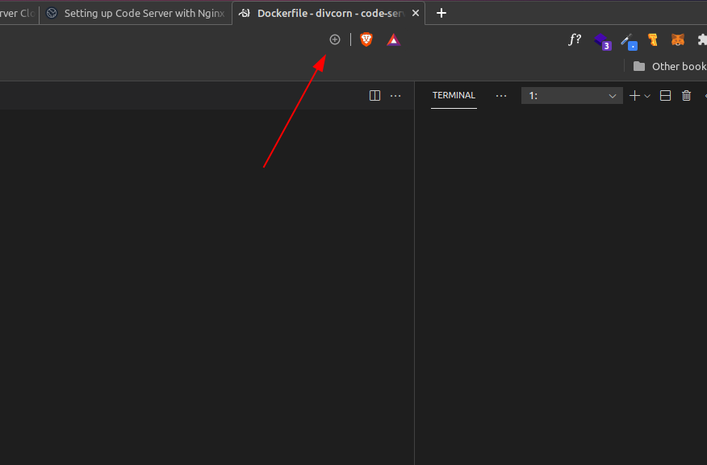
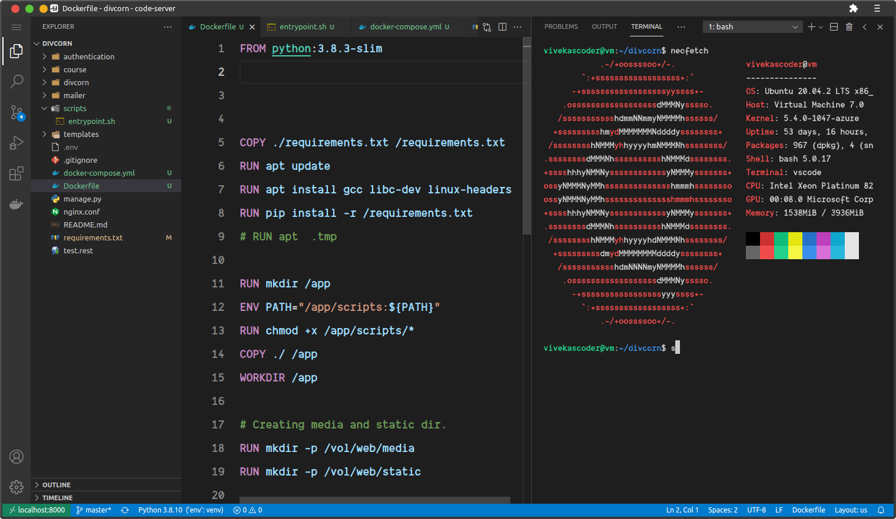

The beginning part was already covered by me from my article and youtube video you can find the link below for them.
Additional Code Server Settings: Here
Code Server Video: Here
You can subscribe me to get more knowledge about Full Stack and DevOps.
Reverse proxy stands for proxying the requests from a domain to another domain or port. For example, you're running a development nodejs server on port 8000, and you want to access this Development server using a domain let's say nodejs.devserver.com, so at that stage you can use nginx to listen for the requests from the domain nodejs.devserver.com. And this is exactly what Reverse proxy does.
Here is an example for setting up reverse proxy with nginx.
server {
listen 80;
server_name xyz.example.com;
# Reverse Proxy.
location / {
proxy_pass http://localhost:8000/;
}
}
Explaination: This config will listen for the requests from the domain xyz.example.com, and forwards these requests to localhost:8000.
server {
listen 443 ssl http2;
server_name code.example.com;
# For SSL
ssl_certificate /etc/letsencrypt/live/code.example.com/fullchain.pem;
ssl_certificate_key /etc/letsencrypt/live/code.example.com/privkey.pem;
# Reverse Proxy.
location / {
proxy_pass http://localhost:8000/;
# Some required Headers.
proxy_set_header Upgrade $http_upgrade;
proxy_set_header Connection upgrade;
proxy_set_header Accept-Encoding gzip;
}
}
sudo vim /etc/nginx/sites-available/reverseproxy
NOTE: You can place anything at
reverseproxy.
sudo ln -s /etc/nginx/sites-available/reverseproxy /etc/nginx/sites-enabled/reverseproxy
sudo apt install python3-certbot
sudo systemctl stop nginx.service
sudo certbot certonly --standalone --preferred-challenges http-01 -d code.example.com
sudo systemctl restart nginx.service
Yeah, it does you can use the brave browser and install this application as PWA.
NOTE: You will not be able to do it, if you have'nt created SSL certificate. because PWA is only for https websites.
You can install as a PWA by clicking on this button.

